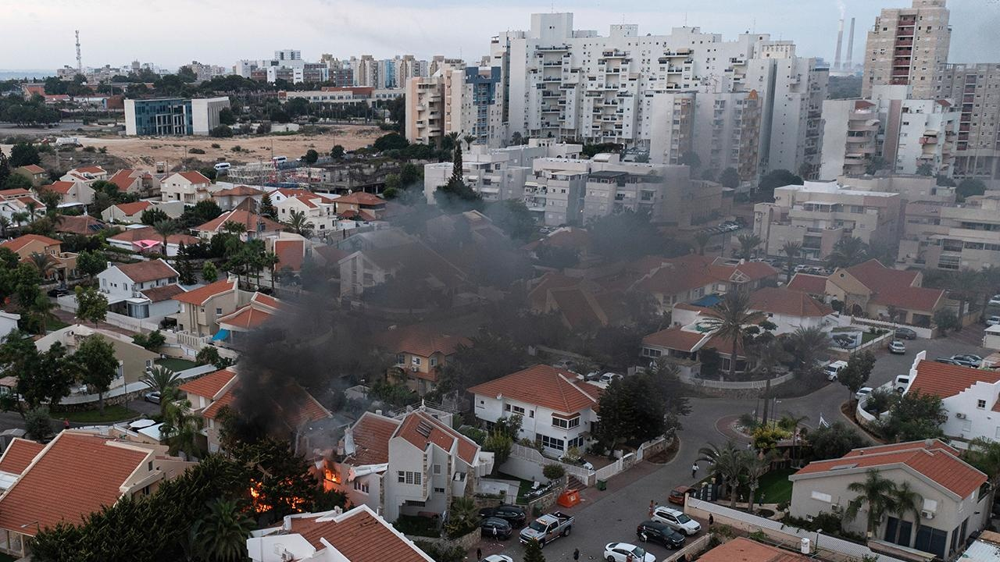

Countries pull UNRWA funding after staffers accused of aiding Oct. 7 attacksA United Nations agency's alleged involvement in the October 7 terror attacks in Israel has led to widespread decisions to cut funding. The United Kingdom, Canada and other key Western powers have joined the United States in cutting funding to the United Nations Relief and Works Agency (UNRWA) for Palestine Refugees in the Near East after 12 employees were accused of being "involved" in the attack. Germany, Italy, Australia, Finland, Netherlands and Switzerland have also joined the boycott following the accusations, which have already resulted in the termination of multiple staffers. The United States temporarily paused "additional" funding for the key United Nations agency in the Gaza Strip over allegations that some of its members were "involved" in the October 7 Hamas terrorist attack in Israel. Twelve United Nations Relief and Works Agency (UNRWA) for Palestine Refugees in the Near East employees were allegedly "involved" in the attack, and the U.S. funding will resume subject to an investigation from the United Nations. "UNRWA can read the Beltway press well enough to know that Congress is moving to cut off U.S. funding," Richard Goldberg, former National Security Council (NSC) advisor during the Trump Administration, told Fox News Digital. "This is a PR move designed to preempt congressional action. It does nothing to change the fact that UNRWA is complicit in Hamas war crimes and remains a key obstacle to peace," Goldberg, currently a senior advisor at the Foundation for Defense of Democracies, added. The State Department under former President Trump cut ties with UNRWA in 2018, but President Biden resumed the relationship shortly after taking office. He continued to improve spending for the organization, with funds exceeding $1 billion. Israeli Defense Minister Yoav Gallant praised the U.S. decision as "an important step in holding UNRWA accountable." "At least a dozen UNRWA employees participated in the horrific attack conducted on Oct. 7: These are ‘humanitarian workers,’ with salaries paid for by international donations, with blood on their hands," Gallant said in a press release following the State Department's announcement. UNRWA chief Philippe Lazzarini expressed shock at the accusations, assuring the international community that "any UNRWA employee who was involved in acts of terror will be held accountable, including through criminal prosecution." Israeli intelligence and investigations in the months following the terrorist attack led to the accusations, which were presented to the UN this week. Fox News Digital's Peter Aitken contributed to the report. |
 |